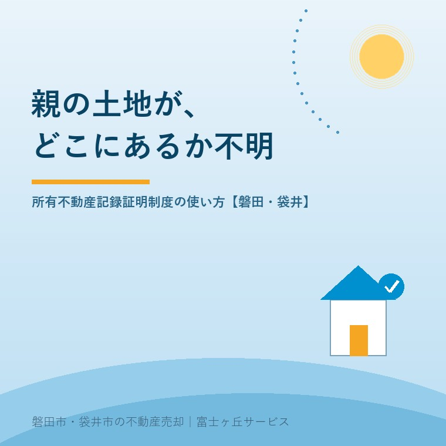

2026年8月12日｜カテゴリ：相続・しまい方／コスト・税・制度

この記事の要点
Q. 父が亡くなりました。実家のほかにも田んぼや山があると聞いていたのですが、どこにあるのか分かりません。全部を調べる方法はありますか。
A. 2026年2月2日から、そのための制度が始まりました。「所有不動産記録証明制度」です。法務局に請求すると、登記官が、亡くなった方が所有権の登記名義人として記録されている不動産を全国から検索し、一覧にした証明書を交付してくれます。請求できるのは登記名義人本人か、相続人その他の一般承継人。全国どこの法務局でも請求でき、手数料は検索条件1件につき1通あたり書面1,600円（オンライン請求＋郵送交付1,500円、オンライン請求＋窓口交付1,470円）です。ただし法務省自身が「氏名・住所等で検索する仕組み上、抽出される不動産の網羅性には限界がある」と明記しています。だから実務では、①この証明書 ②市町村の名寄帳 ③固定資産税の納税通知書と権利証の3つを突き合わせます。磐田市・袋井市・森町では、介護施設の運営から不動産事業を始めた富士ヶ丘サービスのような「介護×不動産」専門の会社に相談するという選択肢があります。
相続のご相談で、いちばん困るのがこの状況です。
「実家の場所は分かる。でも、父が『山があった』『昔、道の向こうの田を買った』と言っていた。それがどこなのか、誰も知らない」。
これまでは、心当たりのある市町村を一つひとつ回り、名寄帳を取り寄せて確認するしかありませんでした。市町村をまたぐと、どこに請求すればよいかの見当すらつかない。結果、「たぶん、これで全部だろう」で相続手続きを終え、何年もあとに未登記の土地が出てくる。実務ではよくある話です。
その状況を変えるために作られたのが、今年2月に始まった新しい制度です。2026年8月12日時点で法務省が公表している内容に沿って、使い方と限界を整理します。
法務省の説明によれば、これは登記官が、特定の人が所有権の登記名義人として記録されている不動産を一覧的にリスト化し、証明書として交付する制度です。
運用開始日は令和8年（2026年）2月2日。令和3年の民法・不動産登記法改正で創設され、相続登記の申請義務化とセットで整えられました。
目的ははっきりしています。相続人が「どの不動産について相続登記をしなければならないのか」を把握できるようにし、手続の負担を減らすこと。そして、その先にある所有者不明土地の発生を防ぐことです。
ポイントは「全国が対象」であることです。名寄帳は市町村ごとにしか出ません。相続登記の期限については相続登記の期限はいつまで？に書きましたが、「期限までに登記する」以前に「対象を知る」段階でつまずく人が多かった。そこを埋める制度です。
| 項目 | 内容 |
|---|---|
| 請求できる人 | ①所有権の登記名義人（自然人・法人）本人 ②相続人その他の一般承継人（被相続人に係る証明書を請求できる） ③代理人（委任状が必要） |
| 請求先 | 全国すべての法務局・地方法務局（支局・出張所を含む）。不動産の所在地に関係なく、最寄りの法務局でよい |
| 請求方法 | 窓口・郵送・オンライン |
| 手数料 | 検索条件1件につき、1通あたり 書面請求：1,600円／オンライン請求＋郵送交付：1,500円／オンライン請求＋窓口交付：1,470円 |
手数料の数え方に注意してください。「1通いくら」ではなく「検索条件1件×1通ごと」です。法務省の例では、検索条件を4件指定して1通請求すると、4件×1通×1,600円＝6,400円となります。
ここでいう検索条件とは、氏名と住所の組み合わせです。次に説明するとおり、親が生前に何度も引っ越していると、条件を増やさざるを得ません。そこで金額が動きます。
法務省が示している必要書類は、立場によって変わります。
| 請求する人 | 必要な書類 |
|---|---|
| 登記名義人本人 | 印鑑証明書または本人確認書類の写し。過去の氏名・住所を検索条件とする場合は、戸除籍謄本等 |
| 相続人 | 上記に加えて、相続関係を証する戸籍謄本等、および被相続人の過去の氏名・住所を証する情報 |
| 代理人 | 上記に加えて、委任状と請求人の印鑑証明書 |
実務でいちばん重要なのは、「被相続人の過去の氏名・住所」です。
登記簿には、登記をした当時の住所と氏名が記録されています。昭和50年に山を買ったなら、そのときの住所が載ったまま。その後、親が住み替えていても、本人が住所変更の登記をしていなければ、登記簿は昔のままです。
ですから、亡くなった時点の住所だけで検索すると、昔の住所で登記された不動産は出てきません。ここが、この制度を使いこなせるかどうかの分かれ目です。
対策は決まっています。戸籍の附票（住所の履歴が載ります）を取り、親が住んだ住所を古い順に並べる。それを検索条件として指定する。手数料は条件の数だけ増えますが、後から出てくる土地の手続き費用に比べれば、はるかに安上がりです。
この制度で私がいちばん強調したいのは、ここです。法務省は、証明書の限界を自ら明記しています。
「氏名・住所等で検索する仕様上、検索結果として抽出される不動産の網羅性には限界があります」
具体的には、次のような不動産は出てこない可能性があります。
つまり、この証明書は「これで全部です」という保証書ではありません。「登記簿を氏名・住所で検索した結果、これだけ見つかりました」という報告書です。
それでも価値は非常に大きい。これまでゼロからの手探りだったものが、8割方の当たりがつくようになったのですから。残りを他の資料で埋める、という使い方が正解です。
相続の現場でずっと使われてきたのが、市町村の名寄帳（固定資産課税台帳）です。新制度と、どう使い分けるか。
| 所有不動産記録証明書 | 名寄帳（固定資産課税台帳の写し） | |
|---|---|---|
| 出すところ | 法務局（登記官） | 市町村（磐田市なら資産税課） |
| 範囲 | 全国 | その市町村の中だけ |
| もとになる情報 | 登記記録 | 固定資産課税台帳（課税のための記録） |
| 手数料 | 1,600円〜（検索条件1件・1通あたり） | 磐田市は1年度・納税義務者ごとに300円（縦覧期間の縦覧は無料） |
| 弱点 | 氏名・住所の一致が前提。未コンピュータ化分は対象外 | 市町村をまたげない。共有の扱いや非課税物件の記載は市町村により異なる |
順番としては、まず所有不動産記録証明書で全国の当たりをつけ、出てきた市町村ごとに名寄帳で裏を取る。これが2026年以降の標準的な進め方になると思います。
そして、手元にある固定資産税の納税通知書も忘れないでください。固定資産税通知書だけで実家の何が分かる？に書いたとおり、あの1枚には課税されている物件が並んでいます。3つを並べて、差分を探す。これが実務です。
地元の手続きを一つ。磐田市では、固定資産の所有者が亡くなった場合、法定相続人が「現所有者」として、市税条例に基づく現所有者の申告を行うこととされています（令和4年度から）。相続人代表者の届出とあわせた様式が用意されています。
これは相続登記とは別の、市への手続きです。登記が終わっていなくても、課税上の窓口を決めるために必要になります。袋井市にも同様の取扱いがありますので、市外の不動産が見つかったら、その市町村にも確認してください。
証明書で不動産が見つかったら、次は登記です。ここで期限の話になります。
相続登記の申請義務化は、令和6年（2024年）4月1日に施行されました。法務省の説明では、相続により不動産の所有権を取得した相続人は、自己のために相続の開始があったことを知り、かつその不動産の所有権を取得したことを知った日から3年以内に相続登記を申請する義務があります。
正当な理由がないのに怠ったときは、10万円以下の過料の適用対象です（不動産登記法第164条第1項）。ただし登記官はいきなり通知するのではなく、相当の期間を定めて申請するよう催告し、それでも申請がない場合に地方裁判所へ通知するという手順が定められています。
そして重要なのが、施行日前に開始した相続も対象だという点です。法務省は、施行日前の相続で未登記のものについて令和9年（2027年）3月31日まで（知った日が令和6年4月以降ならその日から3年以内）と示しています。
ここで今日の話がつながります。「先代名義のまま」の土地は、この期限の対象です。そして、そういう土地こそ、どこにあるか分からない。だからこそ、所有不動産記録証明制度が2026年2月に始まった意味があります。2027年3月末まで、残り約7か月です。
なお、遺産分割がまとまらないなど3年以内の登記が難しい場合には、相続人申告登記という簡易な手続きで、まずは基本的な義務を果たすことができます。詳しくは司法書士へご相談ください。
地元で相続のお手伝いをしていると、証明書や名寄帳に載って驚かれる不動産には、傾向があります。
田畑・山林の扱いには、農地法という別のハードルがあります。相続した田んぼ・畑・山林は売れない？もあわせてお読みください。見つけることと、手放せることは別問題です。ただし、見つけなければ何も始まりません。
もうひとつ。権利証（登記識別情報）が見つからなくても、この制度は使えます。請求に権利証は不要だからです。権利証が見当たらないときの売却については権利証が見つからない実家は売れますかに書きました。
当社は、磐田市見付で介護施設を運営するところから不動産の仕事を始めました。ご相談の入口は、たいてい「親が施設に入った」「親を看取った」です。
親を看取った直後のご家族に、「戸籍の附票を取って、法務局へ行って」と申し上げるのは酷だと分かっています。だから私たちは、まず手元にある紙を見せてくださいとお願いしています。固定資産税の納税通知書、古い権利証、農協や役所からの郵便物。そこから、どの市町村を当たるべきかの見当をつけます。
目指しているのは「高く売る」ことだけではなく、「家族が困らない売却」です。10年後に「知らない土地が出てきた」と困らないことも、そこに含まれると思っています。
事実の整理には、ふじがおか実家カルテをお使いください。相続の全体像は相続はじめ相談室にまとめています。
「どこにあるか分からない」は、もう、調べようがない話ではなくなりました。1,600円と、戸籍を数通。それで、親が残したものの輪郭が見えます。
ふじがおか実家カルテ｜「どこにあるか分からない土地」の探し方からご相談ください
まず、手元の紙を見せてください。
住所や納税通知書をもとに、名義と相続登記の要否、当たるべき市町村、農地・私道・山林の有無を整理し、次に何を確認すべきかを1枚にしてお出しします。作成料0円・入力約1分。申込みだけで売却依頼にはなりません。
本記事は2026年8月12日時点で法務省・法務局・政府広報オンライン・磐田市が公表している情報に基づく一般的な解説であり、個別の相続手続きの結果を保証するものではありません。所有不動産記録証明書は、氏名・住所等を検索条件として登記記録を検索した結果を証明するものであり、法務省が明記しているとおり抽出される不動産の網羅性には限界があります。本証明書に記載がないことをもって、当該人が不動産を所有していないことの証明にはなりません。請求に必要な書類・様式・手数料の詳細および具体的な検索条件の指定方法は、必ず最寄りの法務局へご確認ください。相続登記・相続人申告登記の具体的な手続と期限の判断は司法書士へ、相続税の申告は税理士へ、農地・山林の売却可否は各市町村の農業委員会等へご相談ください。名寄帳の交付手数料・現所有者申告の要否は市町村により異なりますので、各市町村の担当課へご確認ください。個別のご相談は当社までどうぞ。

この記事を書いた人：大石浩之（宅地建物取引士）
磐田市・袋井市・森町で「介護×相続×空き家」に特化した不動産売却支援を行う富士ヶ丘サービスの代表取締役・宅地建物取引士。介護施設の運営から不動産事業を始めた経験をもとに、売主とご家族が困らない売却を一件ずつお手伝いしています。プロフィール
磐田市・袋井市・森町の実家じまい・相続空き家相談
固定資産税通知書だけでも相談できます
住所があいまいでも、通知書や写真から名義・道路・農地・残置物の確認順を整理します。カルテ申込またはLINEで状況を送ってください。
富士ヶ丘サービス株式会社／静岡県磐田市見付5789番地1／TEL:0538-31-3308／静岡県知事 (2) 第14083号／代表取締役・宅地建物取引士 大石 浩之